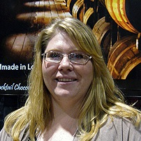
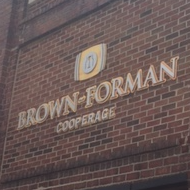
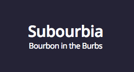
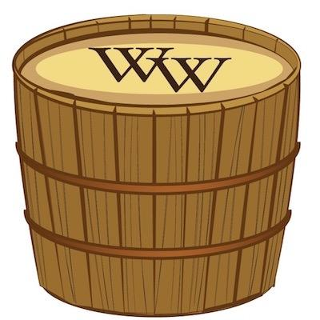
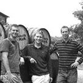
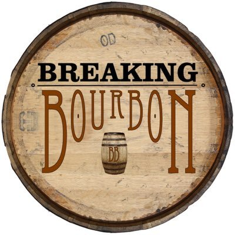
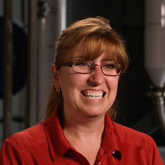

-
EPISODE
060
08.12.16
34:55
Kelly Ramsey, Bourbon-Certified Chocolatier and Owner of Art Eatables, talks about her delicious bourbon truffles and the difference between bourbon balls. Read Show Notes
- Ryan, any fond memories of bourbon balls growing up?
- Our guest today didn't invent the bourbon ball, instead they made the bourbon truffle.
- Difference bourbon ball and truffle
- Tell us about how you got into bourbon
- What do you think makes pairing bourbon and chocolate a harmonious marriage?
- What brands/chocolates do you have?
- Is it really possible to tell the difference between them?
- Does the truffle process change based on the bourbon you chose?
- Talk about some of the tasting notes between a few of them
- What's your best selling truffle?
- Talk a bit about the B. I. T.
- Everything is hand made too. It's not out of a factory
- www.arteatables.com
Guess we'll be having some truffles for dinner. pic.twitter.com/u1K9t0vOyz
— Greenie D. McGee (@greenietravels) December 30, 2015 -
EPISODE
059
08.05.16
43:59
Freddie Johnson, 3rd Generation Employee and Tour Guide at Buffalo Trace, talks about his family legacy and his depth of bourbon knowledge. Read Show Notes
- Freddie Johnson, legendary tour guide at Buffalo Trace
- This will be an easy question for you and the basis for our show today, but tell everyone about your family history in the area and how you got into the bourbon industry. and let’s be long-winded here.
- At what age did Jimmy Sr start working at the distillery? and was it called the GTS distillery at that point?
- What roles did Jimmy Sr have at the distillery?
- What do you mean that he had Irish features?
- What would he do on business trips with Colonel Blanton?
- What age did Jimmy Jr start at the distillery?
- Your dad also had a special relationship with Colonel Blanton as well.
- Why would he filet fish? It didn’t seem like that would be in a specific line of duties
- Does Harlan or anyone here every ask you to do some oddball task?
- What keeps you going every day?

-
EPISODE
058
07.29.16
42:32
Tim Judge, Global Ambassador for Bulleit Bourbon, dives into the Bulleit Bourbon origination and all the new expansion taking place. Read Show Notes
- Tell us about your journey into whiskey
- Why did you choose Bulleit as your spirit of choice in the portfolio?
- What lessons did you take away from Tom after meeting him?
- We’ve had plenty of ambassadors on the show that talk about going around to different places and telling bartenders about their bourbon or attending events and handing out cocktails. but you’re a “global” ambassador, what more does that entail?
- You also have passion outside of spirits, talk about that
- For those folks who are unfamiliar, which I think would be pretty hard to do at this point, tell people about Bulleit bourbon.
- Also let’s talk individually about the different expressions that are available. and what makes each unique or special. sort of the pitch that you would do during a tasting event.
- Bulliet Bourbon has the tagline that says “Frontier Whiskey”. The thing of it is, you would probably never want to drink Frontier Whiskey
- And marketing plays a heavy role in the label positioning as well, talk about that.
- Bulleit is now owned by Diageo and is hypothesized to be distilled by Four Roses. However, mistake me if I’m wrong, I believe that the agreement or contract with Four Roses is going to be coming to an end and distillation is going to be moving to the Bulleit Frontier experience at the acclaimed Stitzel-Weller Distillery.
- Do you see a change in the flavor profile coming as new operations come online?
- We had Carol Perry back on the show back in episode 23 and you had the opportunity to meet with him. What did you think?
- Back to you, a lot of people here in the states are starting their own bourbon and whiskey collections, trying to round up as many as they can for the fun of tasting and even for potential profit, do you have a big collection yourself?
- This is a question from Blake @ bourbonr.com - if you want to make some classic bourbon cocktails, what are some of the ingredients you should always have on hand?

-
EPISODE
057
07.22.16
36:14
Jason Brauner, Owner of Louisville-based restaurant Bourbon’s Bistro, talks about his family history at National Distillers and running a full serviced bourbon-themed restaurant. Read Show Notes
- Once again, thanks to Adam Johnson…..., we are making our first podcast on the Urban Bourbon Trail. For those not familiar, the Urban Bourbon Trail is sponsored by the Louisville Vistor’s Center as a way to show attractions relating to bourbon right here in the heart of the city. It has a majority of bars and restaurants but you can download the Urban Bourbon Trail app for yourself to find out more. Or you can pick up a Passport at any Urban Bourbon Trail location or at the visitors center on 4th street downtown. So there’s more to the bourbon trail than heading out to bardstown.
- What’s your history with bourbon?
- Did you have the foresight to stock away a bunch of National Distiller’s products?
- We met at WhiskyLive and you were wearing your great uncle’s watch. talk about that and your family history in the bourbon business.
- Give everyone the scoop about Bourbon’s Bistro
- Talk about the connection between bourbon and France.
- How did you decide to get into the restaurant business?
- What did it mean at the time to investment in something that was on the bandwagon and take that risk?
- Back in 2014 your restaurant was names on of the world’s best whiskey bars, talk about that
- You’re also a stop on the Urban bourbon trail. How has that effected business
- What’s your favorite thing on the menu because mine is the shrimp and grits
- You have quite a whiskey collection and lots of dusties. talk about it.
- Are you in favor of KY changing their laws to be a more relaxed like DC where you can source a bottle from anywhere to sell at your establishment, cutting out the distributor and giving your patrons a chance at tasting bourbons that you have amassed?
- Any advice to others out there looking to open a bar?

-
EPISODE
056
07.15.16
36:11
Michael Nelson, Plant Director at the Brown-Forman Cooperage, gives a step-by-step and inside look to the barrel making process. Read Show Notes
- Give us your bourbon story.
- Before we dive into the ins and outs of technicalities of barrel char. give us a history lesson about where we are.
- So this is my first encounter being at a cooperage. give me the 101
- We saw one barrel that was cross cut. Talk about that.
- What’s the average number of discarded barrels that don’t meet some sort of quality assurance?
- Talk about char levels for a bit because it’s something that is always said, but never really explained about in depth.
- Is the barrel making process getting more expensive on a yearly basis because of demand and material supply?
- For everyone that missed the episode with Chris Morris where we talked briefly about the cooperage, talk about what it means to have a cooperage dedicated to their private whiskey
- The release of Cooper’s Craft happened recently. And it was named after the location of where we are recording today. What does that mean to you?
-
EPISODE
055
07.08.16
38:40
Josh Hollifield, Visitor Center Manager for Barton 1792, gives a history of the grounds and an insider look to the resurgence of the 1792 brand. Read Show Notes
- Shoutout to Adam Johnson of the KY Bourbon Affair
- What all does your job entail?
- What’s your coming to age tale of bourbon?
- Most people may or may not know, but Sazerac is your parent company who also owns Buffalo Trace. Talk a bit about that background
- Can you give us some history of the distillery?
- Talk about the different brands coming out of Barton
- Talk about Ridgemont
- Lets talk about the new 1792 expressions
- We know our friend of the show Owen Powell picked a barrel of 1792 and asked it to be Full Proof. Are barrel proof offerings of 1792 something that you all are considering for a majority of these soon?
- Can you talk a little bit about your mash bills?
- What other spirits do you age here?
- What's the one thing people are always surprised about when leaving or taking tour
- The barrel char in the gift shop
- What's next for Barton?

-
EPISODE
054
07.01.16
35:58

Susan Reigler, Executive Bourbon Steward and author of multiple bourbon books, talks about her past as a food critic and shares how to pair food with bourbon and explains what it means to be an Executive Bourbon Steward. Read Show Notes
- Your bourbon resume is impressive. Where did this all begin? It must have taken some sort of inspiration.
- How would you categorize yourself? We have bourbon historians. Do you consider yourself to be a bourbon enthusiast?
- I want to talk about food for a little bit because you must have a very refined palate. When was the last time you ate at a Red Lobster?
- Do you think food and bourbon pair well together because I sometimes find that i don’t get to experience the full flavor of a bourbon when i’m trying to eat my pepperoni stuffed hot pocket. What dishes do you find are best paired with a bourbon?
- Any particular bourbon that works better than others?
- First off, give the listeners a quick explanation of what the James Beard Awards are and what’s is like being a judge.
- Give us the top 5 restaurants that you need to eat at while you’re here exploring the trail
- What’s it mean to be an executive bourbon steward?
- We've been told that women have a better palate than men. I hear you have scientific evidence that it's true.
- See all of Susan's books on Amazon.com

-
EPISODE
053
06.23.16
29:37
Chef Edward Lee, 4-time James Beard nominee, TV Show host, owner of 610 Magnolia and Milkwood, dives into culinary arts and cooking with bourbon while sharing his philosophy on bourbon with dinner that led to the creation of Jefferson’s Chef Collaboration. Read Show Notes
- You were a suggestion from one of our listeners, give us your background as a chef and what led to southern cuisine
- The derby couldn’t have been your first bourbon experience, or was it?
- What intrigues you about bourbon?
- Can you remember your first dish using bourbon?
- Tell people about your two restaurants and dishes you serve here in Louisville
- Does bourbon have any inspiration on your menus from time to time?
- Talk to us about your book Smoke and Pickles and cocktails
- Do you have a bourbon of choice when your cooking?
- Talk about the process of choosing a bourbon for Jefferson’s Chef Collaboration

-
EPISODE
052
06.16.16
43:04
Kerry Bossak (@bourbon_gamer), author of Subourbia.com, talks about how bourbon helps him lose weight and goes over his top 10 list of the most annoying trends in the bourbon world. Read Show Notes
- Special guest co-host Blake from bourbonr.com shares his favorite release of the past few months.
- How did you get into bourbon?
- Also talk about your blog
- Then we dive into the Top 10 most annoying trends in the bourbon world.
 -
EPISODE
051
06.11.16
36:59
A Whiskey Wash Roundtable. Maggie Kimberl, Nino Marchetti, and Michael Veach join as we discuss Maker’s 46, Pappy & Co Cigars, history of Buffalo Trace, Castle & Key, and the failed crowd funding campaign by Jim Rutledge. Read Show Notes
- Wrapped up dinner at Down One Bourbon Bar and in the Speak Easy Room.
- Down One has a private Maker’s 46 selection and Micheal talks about a good food pairing
- Talk about the Maker’s 46 Barrel Selection
- Maggie, you had a chance to be a part of Pappy & Co’s Pappy Cigar Line. Talk about it.
- How long will it be till you see counterfeit Pappy cigars?
- Nino, you saw something interesting at a liquor store in Frankfort, talk about it.
- Michael, talk a little bit about the Buffalo Trace Distillery history
- Nino, you’ve been here for 3 days now, what is the coolest thing you’ve seen so far?
- What makes you excited for Castle & Key?
- I want to get your opinions on the failed Rutledge crowd funding campaign.

-
EPISODE
050
06.03.16
34:47
Ray Perryman (@LBSpringHurst), Spirits Manager at Liquor Barn (@LiquorBarn) in Louisville, shares an insider view to carrying over 400 bourbon and whiskeys, how to deal with the allocated ones, and keeping transparency. Read Show Notes
- We open up a Van Winkle Rye 13 Year to start the show
- Ray, I know you're a beer guy but do you enjoy the brown water?
- How did you get into bourbon?
- What is Liquor Barn for all those outside of Louisville?
- What's the day in the life of a spirits manager?
- You came into the Springhurst location and you said it was in dire need of a shakeup. What have you done to increase interest?
- Talk about the Tasting Bar
- How do you all deal with releasing rare bourbons
- Talk about Flat Boat Bourbon

-
EPISODE
049
05.27.16
38:42
Jordan, Eric and Nick, authors behind BreakingBourbon.com, talk about how bourbon fill levels change flavor profiles and we look at the new releases to come in 2016. Read Show Notes
- We see yet another Colonel Taylor will be hitting the market called EH Taylor four grain.
- Each one of you give us a quick tidbit about how you got into bourbon
- So what led into the point of starting a blog?
- You all get to do a lot of reviews, what are some top reviews for whiskeys outside the state of KY?
- You did your 100th review and you made it special. Tell us about that.
- One of my favorite articles is the Bourbon Storage experiment. Tell everyone about that.
- Once you open a bottle of bourbon, how long do you have until you have to drink it all?
- One of your most popular articles is the release calendar. What are you all looking at for favorite releases outside of Fall?
 -
EPISODE
048
05.20.16
30:52

Adam Johnson (@CamperJohnson), Director of the KY Bourbon Trail, comes back to gives us the scoop on the 2016 Bourbon Affair and a more about Senate Bill 11. Read Show Notes
- Senate Bill 11 tourism reform bill
- You’re our first 3-peat guest, what’s been happening in the past year?
- We’ve said time and time again that the Bourbon Affair is like a fantasy camp for bourbon lovers. Give everyone a recap of what is the Kentucky Bourbon Affair.
- I was fortunate enough to go to the Opening Event last year at the MegaCavern and it was phenomenal. I was able to rub shoulders with titans of the industry and met some stellar folks. My wife even got me to do the ropes course since i’m scared of heights. What is the opening event like this year?
- Talk about some of the newer events happening this year?
- There was also one with Heaven Hill’s Build-aBarrel. talk about that.
- I see that half the events are already sold out. it seems like everyone wants the opportunity to do a single barrel selection.
- Pick the top 3 events with tickets still available.
- We talked about the Old Forester Speakeasy series with Andy Treinan a few weeks ago. That seems like another “can’t miss event”

-
EPISODE
047
05.10.16
36:53
Andrea Wilson, Vice President and General Manager of Michter’s Distillery, gives us the history of Michter’s, her rich history influencing the bourbon industry behind the scenes, and hints at a new 20 year bourbon release and potential Celebration. Read Show Notes
- Talk about your first encounter with whiskey or bourbon
- How did that influence you to make a career from it?
- What kind of path did you take because you can’t tell a distillery, “Hey i’ve got experience because i’ve been moonshining”
- You’ve got a historic past. First woman to serve as chair for the KDA. What does that mean to you?
- Talk about your current position at Michter’s and what that means
- Give some people a quick history lesson of Michters
- There is a new place being built on Whiskey Row, talk about that.
- There are 4 core products, talk about each one of those and choose a favorite child
- Then we have a few that are super extreme premium bourbons. Now choose a favorite child.
- You also have reminiscent feelings when drinking bourbon, talk about your tasting experience.
- What sort of legacy or impression do you want to leave on the industry?

-
EPISODE
046
04.29.16
34:36
Andy Treinen, the Director of Marketing at the Frazier History Museum (@FrazierMuseum), talks history of prohibition, the future Bourbon Museum for “bourbonism”, and the Old Forester Speakeasy Series. Read Show Notes
- Huge shoutout to Josh Menke for sending us a sample of Stranahans
- Talk about your introduction to bourbon
- What is the Frazier History Museum?
- Talk about the prohibition exhibit on display right now
- Talk about some of the things in the exhibit
- Talk about George Remus and Al Capone
- Why did they decide to do an exhibit?
- What do you think is the most prized possession in the exhibit?
- Talk about the future of this exhibit and your partnership with the KDA
- Talk about what we will see in the future bourbon museum
- This is important because of your location, so talk about that for a minute
- Talk about the Old Forester Speakeasy Series
- Finally, what’s the cost of admission to those who are on the trail and want to see the exhibit?